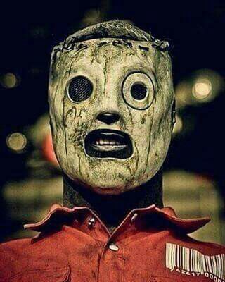
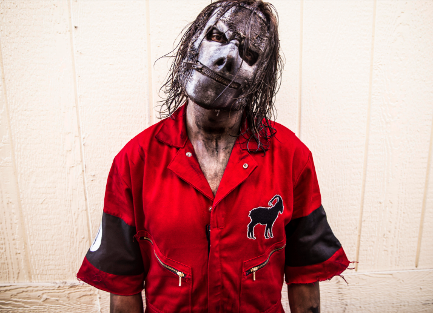
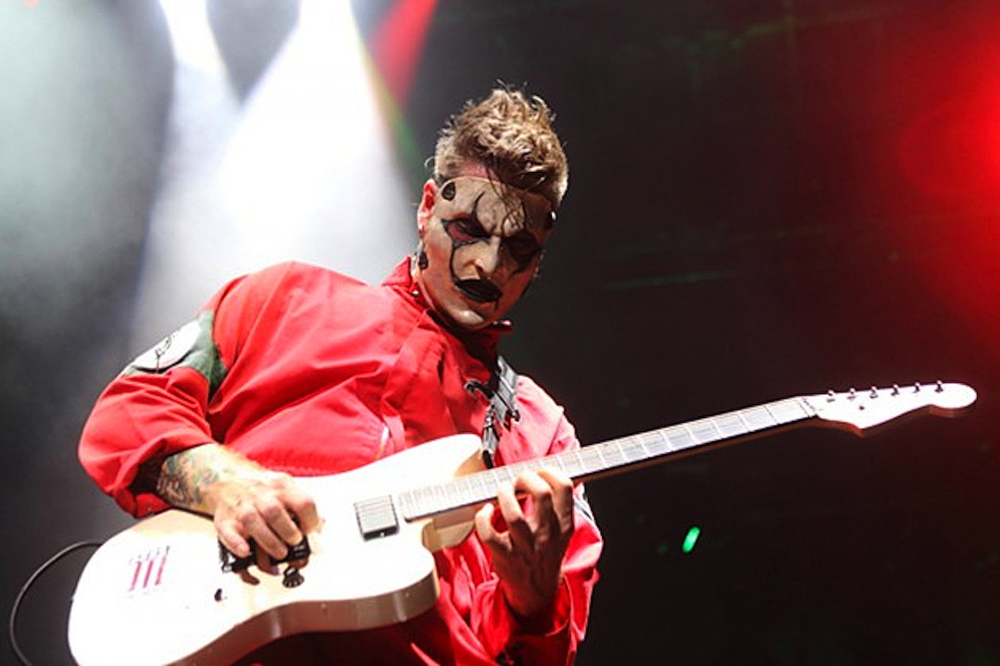
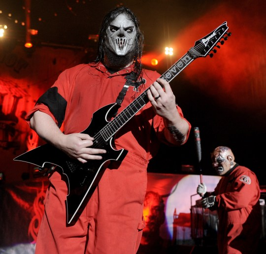
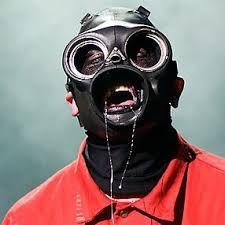
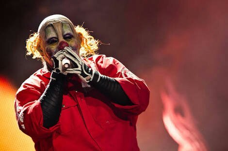
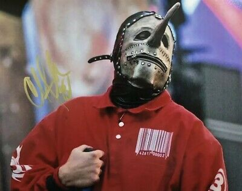
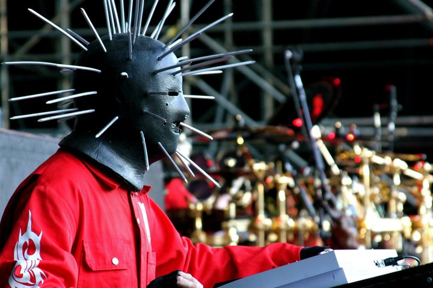
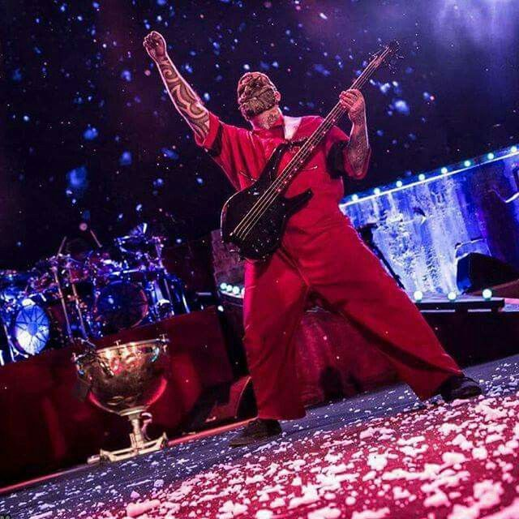

Siga a banda nas demais plataformas:
YouTube
Facebook
Instagram
Spotify
Deezer
|

Corey Taylor - Cantor Principal - Desde 1995
Corey Taylor (Des Moines, 8 de Dezembro de 1973) é um compositor, escritor e vocalista das bandas Stone Sour e
Slipknot. Na banda Slipknot, Corey é o número #8, além de ser conhecido por ter uma voz extremamente rouca, grave e agressiva. Nos palcos, Corey é como se fosse outra pessoa, quando está utilizando a sua máscara parece agressivo...
Leia mais

Jay Weinberg - Baterista - Desde 2014
Jay Weinberg (Middletown, 8 de setembro de 1990), é um baterista Estados Unidos e filho do baterista Max
Weinberg. Na turnê de 2009, ele substituiu seu pai na E Street Band de Bruce Springsteen. Em 2010, ele foi
brevemente o baterista do Madball. Durante 2011 e 2012, Weinberg tocou no Against Me!. Em 2014, se tornou o
baterista do Slipknot...
Leia mais

James Root - Guitarrista - Desde 1999
James Donald Root (Las Vegas, Nevada, 2 de outubro de 1971), ou simplesmente Jim Root, é um guitarrista
estadunidense integrante da banda de metal Slipknot e ex integrante da banda de metal alternativo/post-grunge
Stone Sour. Jim foi demitido da banda em maio de 2013, para se dedicar ao Slipknot...
Leia mais

Mick Thomson - Guitarrista - Desde 1996
Mickael Gordon Thomson (Des Moines, Iowa 3 de novembro de 1973), conhecido como Mick ou pelo seu número
#7, é um dos guitarristas do Slipknot...
Leia mais

Sid Wilson - Toca discos (DJ) - Desde 1998
Sidney George Wilson III (Des Moines, Iowa, 20 de Janeiro de 1977), também conhecido como Ratboy, DJ Starscream e
#0 (ou 0) é um músico americano que atualmente faz parte da banda Slipknot...
Leia mais

Shawn Crahan - Percussionista - Desde 1995
Michael Shawn Crahan (Des Moines, Iowa, 24 de Setembro de 1969) também conhecido como Clown, Kong, ou pelo seu
número # 6, é um músico americano conhecido como percussionista e fundador da banda de Nu-Metal Slipknot, é o
baterista do To My Surprise e Dirty Little Rabbits...
Leia mais

Chris Fehn - Percussionista - Desde 1998
Christopher Michael "Chris" Fehn (Des Moines, Iowa, 24 de fevereiro de 1972) é um músico estadunidense ex-
integrante da banda de Nu Metal Slipknot...
Leia mais

Craig Jones - Tecladista - Desde 1996
Craig Michael Jones (nascido em 11 de fevereiro de 1972 (47 anos) tem 1,70 de altura é o programador, tecladista e
sampler da banda Slipknot. É também conhecido como 133 MHz.Pode-se dizer que Craig Jones foi o 'primeiro' compositor digital na cena do metal contemporâneo, é considerado um dos maiores da atualidade. Craig é conhecido por ser muito...
Leia mais

Alessandro Venturella - Baixista - Desde 2014
Alessandro Venturella ou Alex V.é um músico Britânico que já foi guitarrista do Krokodil e do Cry For Silence. Ele
também já foi técnico de guitarra de Brent Hinds do Mastodon, Coheed and Cambria, e do Fightstar. Atualmente é baixista
do Slipknot...
Leia mais
|